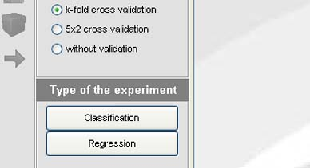

EXPERIMENTS DESIGN
The teaching part has the main objective of designing the desired experiments using a graphical interface and an on-line execution of those experiments, being posible to stop and resume them as you need. Also, you can see the results of those experiments into the environment.
In the following window, the user must select the type of experiment that want to design; it is necessary that he or she selects anyone, because depending on the selection differents DataSets or algoritms will be able to use.

In this figure, you can see a snapshot of the experiment main window.